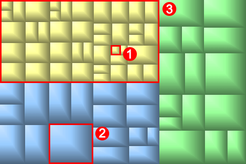

GrandPerspective visualiseert schijfgebruik door middel van zogenaamde boomdiagrammen. Een overzicht venster toont de inhoud van een bepaalde map. Elke rechthoek in het venster vertegenwoordigt een bestand in de map. Het oppervlakte van de rechthoek is evenredig met de grootte van het bestand. Bestanden in dezelfde map staan bij elkaar, maar verder is de plaatsing willekeurig. U kunt een bestand selecteren door er met de muis over te zweven. De naam van het bestand, te samen met de grootte, verschijnt dan onderaan in het venster.
Een overzicht waar ieder bestand gekleurd is naar Map. Aangegeven zijn: 1) een klein bestand, 2) een groot bestand, en 3) een map.
